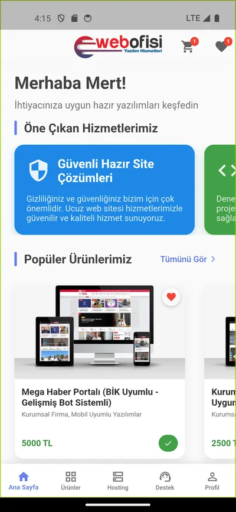
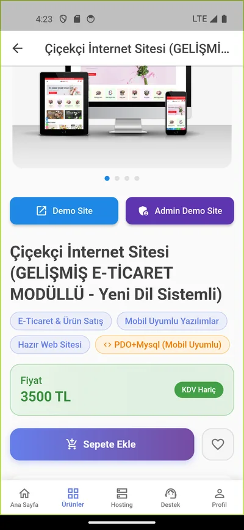
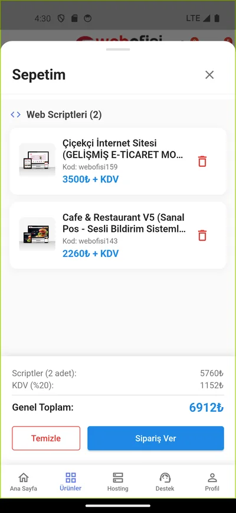
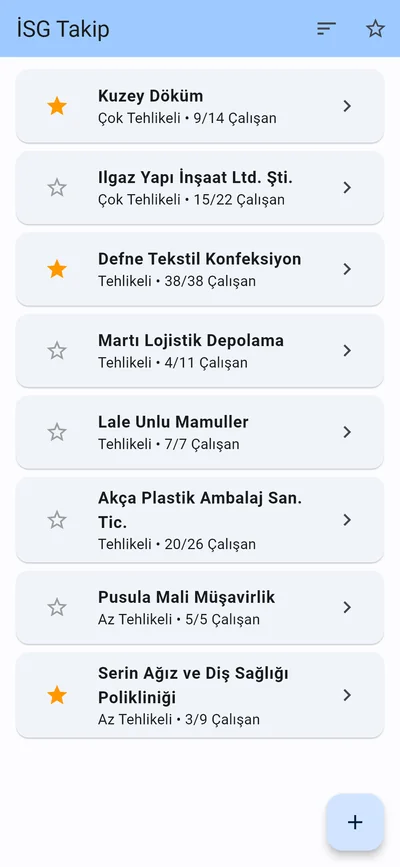
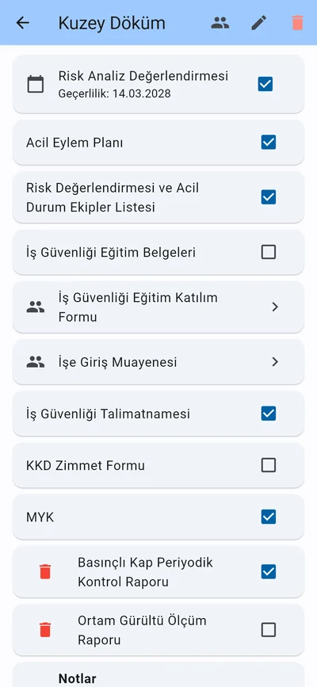
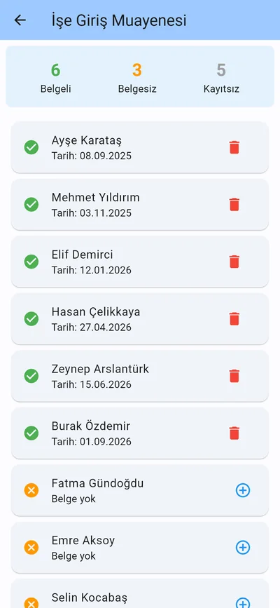

Bilgisayar Mühendisliği, Ondokuz Mayıs Üniversitesi, 2026Computer Engineering, Ondokuz Mayıs University, 2026
Python ve FastAPI ile backend, Flutter ile mobil uygulama geliştiriyorum. Bitirme projemde derin öğrenmeyle deepfake tespiti üzerine çalıştım. Backend ya da mobil alanında junior pozisyonlara açığım.
I build backend services with Python and FastAPI and mobile apps with Flutter. For my senior thesis, I worked on deepfake detection with deep learning. I’m open to junior backend or mobile roles.
Ana sayfada 100 kart için 100 ayrı istek yerine 5 toplu istek gidiyor.
On the home page, 100 cards take 5 batch requests instead of 100 separate ones.
Netflix’te film ve dizi kartlarının üzerine IMDb puanını ekleyen bir Chrome eklentisi. Puanlar, IMDb’nin resmi veri setlerinden oluşturulan bir PostgreSQL veritabanından geliyor. Arada Redis önbelleği olan bir FastAPI servisi var.
A Chrome extension that adds IMDb ratings to movie and TV show cards on Netflix. Ratings come from a PostgreSQL database built from IMDb’s official datasets, served by a FastAPI service with a Redis cache in front of it.
Kartlar ekrana girdikçe puanlar beliriyor, detay penceresinde daha büyük bir rozet çıkıyor.Ratings appear as cards scroll into view, and a larger badge shows up in the detail modal.
Önbellek üç katmanlı. Önce eklentinin kendi belleğine (5 dakika), sonra Redis’e (1 saat), en son PostgreSQL’e bakılıyor.
Ekrana giren kartların başlıkları toplanıp 20’şerli gruplar hâlinde gönderiliyor. Sunucu bunların hepsini Redis’te tek bir MGET komutuyla arıyor.
Detay penceresi açıldığında puan eklentinin belleğinden 1,35 ms’de geliyor.
Veritabanında 59.980 film ve dizi, 23.976 Türkçe başlık var. Mimari kararları 11 ADR’de belgeledim.
IMDb verisi yalnızca ticari olmayan kullanım için lisanslı. Bu yüzden canlı API anahtarla korunuyor ve eklenti dağıtılmıyor.
A three-level cache. The extension’s own memory is checked first (5 minutes), then Redis (1 hour), then PostgreSQL.
Titles of cards that scroll into view are collected and sent in groups of up to 20. The server looks them all up in Redis with a single MGET.
When a detail modal opens, the rating comes from the extension’s memory in 1.35 ms.
The database holds 59,980 movies and shows and 23,976 Turkish titles. Architecture decisions are recorded in 11 ADRs.
IMDb’s data is licensed for non-commercial use only, so the live API requires a key and the extension is not distributed.
2048’de Alfa-Beta ve Expectimax KarşılaştırmasıAlpha-Beta vs Expectimax in 2048
100 oyunluk testte derinlik 3’teki Expectimax oyunların %74’ünde 2048 taşına ulaştı, Alfa-Beta en iyi ayarında %40’ta kaldı.
Over 100 games, Expectimax at depth 3 reached the 2048 tile in 74% of games, while Alpha-Beta’s best setting reached it in 40%.
2048’i insan müdahalesi olmadan oynayan iki arama ajanı aynı tohumlu oyunlarda karşılaştırılıyor. Alfa-Beta yeni gelen taşı onu en kötü yere koyan bir rakip gibi görüyor. Expectimax ise taşın gerçekte olduğu gibi rastgele geldiğini hesaba katıyor.
Two search agents play 2048 on their own and are compared on the same seeded games. Alpha-Beta treats each new tile as an adversary that places it in the worst possible spot, while Expectimax treats it as the random event it actually is.
Derinlik 3’teki Expectimax, tohum 40. Ölçülen 100 oyunun en iyisi (79.784 puan, 4096 taşı).Expectimax at depth 3, seed 40. The best of the 100 measured games (79,784 points, 4096 tile).
Derinlik 4’teki Expectimax, hamle başına yaklaşık 4 kat daha az süre harcayarak (2,42 ms ve 9,18 ms) derinlik 6’daki Alfa-Beta’yı geçiyor.
Arama ve değerlendirme fonksiyonları Numba ile derleniyor. Hamle başına süre düz Python’a göre yaklaşık 20 kat kısaldı, iki sürüm de birebir aynı hamleleri seçti.
Tahta altı heuristic’in ağırlıklı toplamıyla puanlanıyor: boş hücre sayısı, monotonluk, düzgünlük, birleşme potansiyeli, köşe bonusu ve yılan deseni.
Sonradan yapılan kod değişikliklerinin ajanların oyununu değiştirmediği, kayıtlı 427 oyun yeniden oynatılarak doğrulandı.
Expectimax at depth 4 beats Alpha-Beta at depth 6 while spending about 4 times less time per move (2.42 ms against 9.18 ms).
Search and evaluation are compiled with Numba. Time per move was about 20 times shorter than in plain Python, and both versions chose exactly the same moves.
Boards are scored as a weighted sum of six heuristics: empty cells, monotonicity, smoothness, merge potential, a corner bonus and a snake pattern.
Later code changes were checked by replaying 427 recorded games, and every one played out the same.
Hazır web yazılımları (script) ve hosting paketleri satan bir Flutter e-ticaret uygulaması. Uygulama 158 web scriptini XML’den çekip listeliyor. Kullanıcı hesapları, favoriler, sepet, sipariş ve destek talepleri ise json-server ile taklit edilen bir REST API üzerinden çalışıyor.
A Flutter e-commerce app for selling ready-made web software (scripts) and hosting packages. It lists 158 web scripts from an XML feed and handles user accounts, favorites, cart, checkout and support tickets through a REST API simulated with json-server.



Ana sayfa, ürün detayı ve sepet.Home, product detail and cart.
Modeller gerçek backend veritabanının tablolarıyla aynı yapıda. Gerçek API’ye geçmek için büyük ölçüde tek bir adresi değiştirmek yetecek şekilde tasarlandı.
Durum yönetimi Provider ile yapılıyor. Oturum cihazda saklandığı için uygulama kapatılıp açıldığında yeniden giriş gerekmiyor.
Scriptler ve hosting paketleri aynı sepete eklenebiliyor. Ara toplam, %20 KDV ve genel toplam ayrı ayrı gösteriliyor.
Destek talebine kameradan ya da galeriden fotoğraf eklenebiliyor, fotoğraf gönderilmeden önce küçültülüyor.
The models mirror the tables of the real backend database, so moving to the production API is designed to mainly require changing a single base URL.
State is managed with Provider. The session is kept on the device, so there is no need to log in again after restarting the app.
Scripts and hosting packages go into the same cart, with subtotal, 20% VAT and total shown separately.
Support tickets can include a photo from the camera or gallery, which is compressed before it is sent.
Bitirme projesi, üç kişilik ekipSenior thesis, team of three
Derin Öğrenme Yaklaşımları ile Deepfake TespitiDeepfake Detection with Deep Learning Approaches
CutMixup ile gerçek yüzleri doğru tanıma oranı (Real Recall) %83,07’den %93,42’ye çıktı.
With CutMixup, the rate of correctly identified real faces (Real Recall) rose from 83.07% to 93.42%.
FaceForensics++ (c23) ve Celeb-DF v2 veri kümelerinde dokuz farklı modeli sekiz konfigürasyonda, hepsini aynı eğitim ayarlarıyla karşılaştırdık. En tutarlı sonucu ViT-Base verdi. Bu modeli, her batch’te CutMix ya da MixUp’tan birini eşit olasılıkla seçen CutMixup yöntemiyle yeniden eğittik.
We compared nine models across eight configurations on the FaceForensics++ (c23) and Celeb-DF v2 datasets, all with the same training setup. ViT-Base gave the most consistent results. We then retrained it with CutMixup, which applies either CutMix or MixUp to each batch with equal probability.
Çalışmanın akışı. Görsele tıklayınca tam boyutta açılıyor.Workflow of the study. The image opens full size when clicked.
Real Recall’daki artış FF++ dengeli 80-20 yapılandırmasında. Aynı yapılandırmada sahte yüzleri yakalama oranı (Fake Recall) %87,65’ten %80,27’ye düştü.
CutMixup, Celeb-DF v2’de %99,89 AUC’ye ulaştı.
Dengesiz veride doğruluk tek başına yanıltıcı. MesoNet %84,27 doğruluğa ulaştı ama gerçek yüzlerin yalnızca %9,87’sini yakalayabildi.
Sınırlamalar: çapraz veri kümesi testi yapılmadı, sadece c23 sıkıştırma seviyesi kullanıldı, CutMixup yalnızca ViT-Base üzerinde denendi.
The Real Recall gain is on the FF++ balanced 80-20 configuration. In the same configuration, Fake Recall dropped from 87.65% to 80.27%.
On Celeb-DF v2, CutMixup reached an AUC of 99.89%.
On imbalanced data, accuracy alone is misleading. MesoNet reached 84.27% accuracy but caught only 9.87% of real faces.
Limitations: no cross-dataset tests, only the c23 compression level, and CutMixup was tried only on ViT-Base.
Derin öğrenme
Deep learning
ViT
CNN
Transfer öğrenme
Transfer learning
Veri artırma
Data augmentation
Kod paylaşılmıyor.The code is not public.
Bir işyeri hekimi için geliştirildiBuilt for an occupational physician
İSG Takip
Hekimin kâğıtla tuttuğu kayıtların yerini aldı. Tahminen 50 ile 100 arasında şirketin takibi bu uygulamayla yapıldı.
It replaced the physician’s paper records. An estimated 50 to 100 companies were tracked with it.
Birçok şirketin iş sağlığı ve güvenliği evrakını tek yerden takip etmek için yazılmış bir Android uygulaması. Her şirkette hangi zorunlu belgelerin tamam olduğunu, hangi çalışanın eğitimini ve işe giriş muayenesini yaptırdığını gösteriyor.
An Android app for tracking occupational health and safety paperwork across many companies. It shows which mandatory documents each company has, and which employees have completed their training and pre-employment medical exam.



Ekran görüntüleri örnek verilerle üretildi.Screenshots were generated from sample data.
İlk geliştirme sürecinde hekimin geri bildirimleriyle şekillendi. Google Play üzerinden değil, doğrudan APK olarak dağıtıldı.
İnternetsiz çalışıyor. Bütün veri cihazda duruyor, hesap ya da internet bağlantısı gerekmiyor.
Kayıtlı veri bozulsa ya da eski bir sürümden kalsa da okunabiliyor. Hiç okunamayan veri, üzerine yazılmadan önce ayrı bir yere yedekleniyor.
Birim testleri JSON dönüşümlerini, eski sürüm verisini ve bozuk veriyi kapsıyor.
Shaped by the physician’s feedback during early development. Distributed directly as an APK, not through Google Play.
Works offline. All data stays on the device, and no account or internet connection is needed.
Stored data can still be read if it is damaged or left over from an older version. Data that can’t be read at all is backed up separately before anything is overwritten.
Unit tests cover JSON round trips, data from older versions and damaged data.